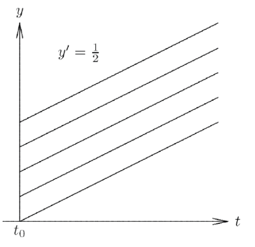
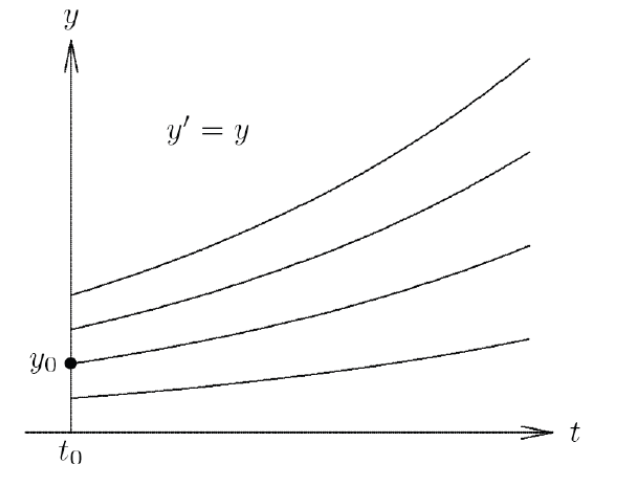

36) Stiff Equations#
Last time#
Ordinary differential equations (ODE)
Stability of ODEs
Explicit methods for solving ODE
Linear Stability Analysis
Numerical stability of ODEs
Today#
The \(\theta\) methods
\(A\)-stability
\(L\)-stability
Examples of PDEs
Stiff equations
Adaptive time integrators (or time stepping schemes)
using LinearAlgebra
using Plots
default(linewidth=4, legendfontsize=12)
using LaTeXStrings
struct RKTable
A::Matrix
b::Vector
c::Vector
function RKTable(A, b)
s = length(b)
A = reshape(A, s, s)
c = vec(sum(A, dims=2))
new(A, b, c)
end
end
function rk_stability(z, rk)
s = length(rk.b)
1 + z * rk.b' * ((I - z*rk.A) \ ones(s))
end
rk4 = RKTable([0 0 0 0; .5 0 0 0; 0 .5 0 0; 0 0 1 0], [1, 2, 2, 1] / 6)
heun = RKTable([0 0; 1 0], [.5, .5])
Rz_theta(z, theta) = (1 + (1 - theta)*z) / (1 - theta*z)
function ode_rk_explicit(f, u0; tfinal=1, h=0.1, table=rk4)
u = copy(u0)
t = 0.
n, s = length(u), length(table.c)
fY = zeros(n, s)
thist = [t]
uhist = [u0]
while t < tfinal
tnext = min(t+h, tfinal)
h = tnext - t
for i in 1:s
ti = t + h * table.c[i]
Yi = u + h * sum(fY[:,1:i-1] * table.A[i,1:i-1], dims=2)
fY[:,i] = f(ti, Yi)
end
u += h * fY * table.b
t = tnext
push!(thist, t)
push!(uhist, u)
end
thist, hcat(uhist...)
end
ArgumentError: Package LaTeXStrings not found in current path.
- Run `import Pkg; Pkg.add("LaTeXStrings")` to install the LaTeXStrings package.
Stacktrace:
[1] macro expansion
@ ./loading.jl:1842 [inlined]
[2] macro expansion
@ ./lock.jl:267 [inlined]
[3] __require(into::Module, mod::Symbol)
@ Base ./loading.jl:1823
[4] #invoke_in_world#3
@ ./essentials.jl:926 [inlined]
[5] invoke_in_world
@ ./essentials.jl:923 [inlined]
[6] require(into::Module, mod::Symbol)
@ Base ./loading.jl:1816
Ordinary Differential Equations#
Given initial condition \(y_0 = y(t=0)\), find \(y(t)\) for \(t > 0\) that satisfies
Application |
\(y\) |
\(f\) |
|---|---|---|
Orbital dynamics |
position, momentum |
conservation of momentum |
Chemical reactions |
concentration |
conservation of atoms |
Epidemiology |
infected/recovered population |
transmission and recovery |
\(y\) can be a scalar or a vector
Recap on solving differential equations#
Recap on linear equations#
Autonomous if \(A(t) \equiv A\) and source independent of \(t\): \( y' = A y + \text{sink}/\text{source}\)
Non-autonomous otherwise
Suppose \(y\) and \(a = A\) are scalars:
then there is an an analytic solution:
We can do the same for systems
But what does it mean to exponentiate a matrix?#
Taylor series again!
where here \(1\) means the identity matrix \(I\), and there are many practical ways to compute it (a paper co-authored by the founder of MATLAB).
Exponentiate a diagonalizable matrix#
Suppose that the diagonalization \(A = X \Lambda X^{-1}\) exists, how do we derive a finite expression for the matrix exponential of \(A\), i.e., \(e^A\), using the scalar exp function?
Solution:
We have:
Thus,
Factoring out the \(X\) and \(X^{-1}\) on the left and right gives:
Stability of ODEs#
A solution of the ODE
is stable if for every \(\varepsilon > 0\) there is a \(\delta > 0\) s. t. if \(\hat y(t)\) satisfies the ODE and \( \hat y(t_0) − y(t_0) \leq \delta\) then \(|| \hat y(t) - y(t)|| \leq \varepsilon\) for all \(t \geq t_0\),
that is, it rules out exponential divergence if initial value is perturbed.
There are different scenarios:
Asymptotically stable solution: \(|| \hat y(t) - y(t)|| \rightarrow 0 \) as \(t \rightarrow \infty\)

Stable solution, but not asymptotically so:

Unstable solution:

Determining stability#
To determine stability of an ODE, we think of the simpler case of a linear, homogenous system \( y' = A y \), or even simpler, where we have only a constant \(\lambda\) multiplied by \(y\). This is called a “test” equation:
We know this has an analytic solution \(y(t) = y_0 e^{\lambda t}\), for an initial condition \(y(0)=y_0\).
If \(\lambda > 0\), exponential divergence: every solution is unstable.
\(\lambda < 0\), asymptotical stability: every solution is stable as \(t \rightarrow \infty\).
If \(\lambda \) is complex:
\(e^{\lambda t} = e^{a t} (\cos(b t ) + i \sin( b t))\)
\(Re(\lambda) = a\). This is the oscillating component multiplied by a real amplification factor
\(Re(\lambda) > 0\): unstable (solution grows)
\(Re(\lambda) < 0\): stable (solution decays)
\(Re(\lambda) = 0\): oscillating (solution oscillates)
Recap on explicit methods for solving ODEs: Forward Euler method#
The simplest method for solving
is to use numerical differentiation to approximate the derivative.
Recall: We know the definition of the difference quotient from Calculus:
Hence, we can use a forward difference formula:
this is a first-order approximation, where \(h \equiv \Delta t\) is the step size, and we have approximated the time domain (temporal axis) with uniform grid spacing \(\Delta t\), so that \(y^n = n \Delta t\), for \(n = 0, \ldots, N\).
When \(n=0\) we use the initial condition given: \(y(t=0)=y(0)=y_0\)
which yields
Hence, we have the solution estimate
Let’s now use again the simplest linear ODE there exists, the “test” equation:
For \(n=0\) we obtain the solution at new time step (\(n=1\)) knowing all information that is given by the initial condition:
For multiple steps, \((n \geq 1))\), we obtain the recurrence relation:
If we apply this repeatedly, we obtain the relation:
Example:#
Let’s try this on a scalar problem
where \(k\) is a parameter controlling the rate at which the solution \(y(t)\) is pulled toward the curve \(\cos t\).
function ode_euler(f, y0; tfinal=10., h=0.1)
y = copy(y0)
t = 0.
thist = [t]
yhist = [y0]
while t < tfinal
tnext = min(t+h, tfinal)
h = tnext - t
y += h * f(t, y)
t = tnext
push!(thist, t)
push!(yhist, y)
end
thist, hcat(yhist...)
end
f1(t, y; k=10) = -k * (y .- cos(t))
thist, yhist = ode_euler(f1, [1.], tfinal=20, h=.2)
plot(thist, yhist[1,:], marker=:circle, label = "Forward Euler")
plot!(cos, label = L"\cos(x)")
Forward Euler on a linear system#
If we have a system of ODEs:
For example, a system of two first-order linear ODEs:
In matrix form:
f2(t, y) = [0 1; -1 0] * y
thist, yhist = ode_euler(f2, [0., 1], h=.1, tfinal=80)
scatter(thist, yhist', label = [L"y_1" L"y_2"])
plot!([cos, sin], label = [L"\cos(x)" L"\sin(x)"])
eigvals([0 1; -1 0])
Recap on Runge-Kutta 4#
thist, yhist = ode_rk_explicit(f2, [0., 1], h=0.5, tfinal=50)
scatter(thist, yhist', label = [L"y_1" L"y_2"])
plot!([cos, sin], label = [L"\cos(x)" L"\sin(x)"])
Apparently it is possible to integrate this system using large time steps.
This method evaluates \(f(t)\) four times per step, so the cost is about equal when the step size \(h\) is 4x larger than forward Euler.
But let’s run it again with a larger step size
thist, yhist = ode_rk_explicit(f2, [0., 1], h=2.9, tfinal=50)
scatter(thist, yhist', label = [L"y_1" L"y_2"])
plot!([cos, sin], size=(800, 500), label = [L"\cos(x)" L"\sin(x)"])
Recap on stability#
To analyze stability, we use the Linear Stability Analysis (LSA).
Linear Stability Analysis#
Why did Euler diverge (even if slowly) while RK4 solved this problem accurately?
And why do both methods diverge if the step size is too large?
We can understand the convergence of methods by analyzing the test problem
for different values of \(\lambda\) in the complex plane.
One step of the Euler method with step size \(h\) maps
For many (\(n \geq 1 \)) steps, we have:
Hence, we obtain the recurrence relation:
where \(R(h \lambda)\) is called the recurrence relation or growth/amplification factor.
Our solution will stay bounded, that means the numerical scheme is stable if and only if
Let’s look at examples when this map causes solutions to “blow up” or to be stable.
function plot_stability(Rz, method; xlim=(-3, 2), ylim=(-1.5, 1.5))
x = xlim[1]:.02:xlim[2]
y = ylim[1]:.02:ylim[2]
plot(title="Stability: $method", aspect_ratio=:equal, xlim=xlim, ylim=ylim)
heatmap!(x, y, (x, y) -> abs(Rz(x + 1im*y)), c=:bwr, clims=(0, 2))
contour!(x, y, (x, y) -> abs(Rz(x + 1im*y)), color=:black, linewidth=2, levels=[1.])
plot!(x->0, color=:black, linewidth=1, label=:none)
plot!([0, 0], [ylim...], color=:black, linewidth=1, label=:none)
end
plot_stability(z -> 1 + z, "Forward Eulor")
This is a complex \(z = \lambda h \) (or \( z =\lambda \Delta t\))-plane.
Stability for RK4#
plot_stability(z -> rk_stability(4z, rk4), "RK4")
Stability for Heun’s method#
plot_stability(z -> rk_stability(2z, heun), "Heun's method")
Recap on implicit methods: Backward Euler#
Recall that one forward Euler step is
This can be evaluated explicitly; all the terms on the right hand side are known so the approximation \(\tilde y(h)\) is computed merely by evaluating the right hand side.
Let’s consider an alternative, backward Euler (or “implicit Euler”).
Recall the forward difference formula:
If instead we use the backward difference formula:
When \(n=1\) we use the initial condition given: \(y(t=t_0=0)=y(0)=y_0\)
which yields
which yields to the solution estimate
This is a (generally) nonlinear equation for \(\tilde y(h)\).
Stability of backward Euler#
For the test equation
at the first time step, the backward Euler method is
or
hence
For many steps, \((n \geq 1)\), we obtain:
Hence, we obtain the recurrence relation:
If we apply this repeatedly, we obtain:
We see that to have stability for the Backward Euler scheme we need:
plot_stability(z -> 1/(1-z), "Backward Euler")
We can see that the stability region is for \(h \lambda\) anywhere in the left half complex plane, i.e., for any \(h>0\) when \(Re(\lambda)<0\).
This means that if the problem of interest is stable \(\Rightarrow\) Backward Euler is unconditionally stable, i.e., stable for any positive step size \(h\).
Computing with implicit methods#
Linear solve for linear problem
Nonlinear (often Newton) solve for nonlinear problem
Need Jacobian or finite differencing
Recap on stability of midpoint (Crank-Nicolson) scheme#
For the test equation
one step of the Crank-Nicolson scheme is
which leads to the solution estimate
We use the test problem:
and we obtain:
which we can rearrange:
For many steps, \((n \geq 1)\), we obtain:
If we apply this repeatedly, we obtain:
We see that to have stability for the Crank-Nicolson scheme we need:
plot_stability(z -> Rz_theta(z, .5), "Midpoint method")
Again, similarly to the case for Backward Euler, we can see here that the stability region is for \(h \lambda\) anywhere in the left half complex plane, i.e., for any \(h>0\) when \(Re(\lambda)<0\).
This means that if the problem of interest is stable \(\Rightarrow\) Crank-Nicolson is unconditionally stable, i.e., stable for any positive step size \(h\).
1. The \(\theta\) methods#
Forward and backward Euler are bookends of the family known as \(\theta\) methods, with Crank-Nicolson (or midpoint) exactly in the middle.
We can express a family of methods with the parameter \(\theta\). One step of the \(\theta\)-method looks like this:
which, for linear problems, is solved as
\(\theta=0\) is explicit Euler, \(\theta=1\) is implicit Euler, and \(\theta=1/2\) is the midpoint/trapezoid or Crank-Nicolson method (equivalent for linear problems).
The stability function (or growth/amplification factor) in this case is:
where we have defined \(z= h \lambda\).
Rz_theta(z, theta) = (1 + (1-theta)*z) / (1 - theta*z)
theta = .5
plot_stability(z -> Rz_theta(z, theta), "\$\\theta=$theta\$",
xlim=(-20, 1))
\(\theta\) method for the oscillator#
function ode_theta_linear(A, u0; forcing=zero, tfinal=1, h=0.1, theta=.5)
u = copy(u0)
t = 0.
thist = [t]
uhist = [u0]
while t < tfinal
tnext = min(t+h, tfinal)
h = tnext - t
rhs = (I + h*(1-theta)*A) * u .+ h*forcing(t+h*theta)
u = (I - h*theta*A) \ rhs
t = tnext
push!(thist, t)
push!(uhist, u)
end
thist, hcat(uhist...)
end
# Test on oscillator
A = [0 1; -1 0]
theta = .5
thist, uhist = ode_theta_linear(A, [0., 1], h=.6, theta=theta, tfinal=20)
scatter(thist, uhist', label = [L"y_1" L"y_2"], title = L"\theta = 0.5")
plot!([cos, sin], label = [L"\cos(x)" L"\sin(x)"])
This is called dispersion: the approximated wave is shifted laterally relative to the actual solution, but its height is not damped.
Instead, numerical dissipation is when there is amplitude damping of the numerical solution as compared to the exact solution.
\(\theta\) method for the cosine decay#
k = 500000
theta = .7
thist, uhist = ode_theta_linear(-k, [.2], forcing=t -> k*cos(t), tfinal=5, h=.1, theta=theta)
scatter(thist, uhist[1,:], title="\$\\theta = $theta\$", label = L"\theta = 0.7 \textrm{ scheme}")
plot!(cos, size=(800, 500))
It starts rough but then it approximates the exact solution very closely, with no dispersion or dissipation.
Next we are going to talk about different stability classes and the \(\theta\) method
2. \(A\)-stability#
A method is \(A\)-stable if the stability region
3. \(L\)-stability#
A time integrator with stability function \(R(z)\) is \(L\)-stable if
4. Examples of PDEs#
Heat equation as linear ODE#
on \([-1,1]\), with an initial condition \(u(x,t=0) = u_0 = e^{-200x^2}\), and periodic boundary conditions: \(u(-1)=u(1)\).
Although this is an example of an Initial Boundary Value Problem, as this is a Partial Differential Equation (PDE), as it has partial derivatives in both time \(t\) and space \(x\), we are going to analyze it here as a linear ODE, in the sense that it is linear in \(u\). In fact, the dependent variable \(u\) and its derivatives only appear to the first power, meaning there are no squared terms or nonlinear functions of the derivative of \(u\).
How do different \(\theta \in [0, 1]\) compare in terms of stability?
Are there artifacts even when the solution is stable?
using Pkg
Pkg.add("SparseArrays")
using SparseArrays
function heat_matrix(n)
dx = 2 / n
rows = [1]
cols = [1]
vals = [0.]
wrap(j) = (j + n - 1) % n + 1
for i in 1:n
append!(rows, [i, i, i])
append!(cols, wrap.([i-1, i, i+1]))
append!(vals, [1, -2, 1] ./ dx^2)
end
sparse(rows, cols, vals)
end
heat_matrix(5)
n = 200
A = heat_matrix(n)
x = LinRange(-1, 1, n+1)[1:end-1]
u0 = exp.(-200 * x .^ 2)
@time thist, uhist = ode_theta_linear(A, u0, h=.1, theta=.5, tfinal=1);
nsteps = size(uhist, 2)
plot(x, uhist[:, 1:5], title = L"\theta = 0.5") # plot only the first 5 time-steps
Example: Advection as a linear ODE#
on \([-1,1]\), with an initial condition \(u(x,t=0) = u_0 = e^{-9x^2}\), and periodic boundary conditions: \(u(-1)=u(1)\).
Here \(u(x,t)\), \(x \in \mathbb{R}\) is a scalar (wave), advected by a nonezero constant \(c\) during time \(t\). The sign of \(c\) characterise the direction of wave propagation. If \(c>0\), the wave propagates in the positive direction of \(x\)-axis. On the other hand, if \(c<0\) then the wave propagates to the negative direction of \(x\)-axis. The mangitude of \(c\) tells us how fast the wave propagates. The exact solution of this equation is given by its initial value. Assuming that the initial condition is given as \(u_0(x,t)= u(x,0)\), then the exact solution of equation is \(u(x,t) = u_0 (x-ct)\).
function advect_matrix(n; upwind=false)
dx = 2 / n
rows = [1]
cols = [1]
vals = [0.]
wrap(j) = (j + n - 1) % n + 1
for i in 1:n
append!(rows, [i, i])
if upwind
append!(cols, wrap.([i-1, i]))
append!(vals, [1., -1] ./ dx)
else
append!(cols, wrap.([i-1, i+1]))
append!(vals, [1., -1] ./ 2dx)
end
end
sparse(rows, cols, vals)
end
advect_matrix(5)
n = 50
A = advect_matrix(n, upwind=false)
x = LinRange(-1, 1, n+1)[1:end-1]
u0 = exp.(-9 * x .^ 2)
@time thist, uhist = ode_theta_linear(A, u0, h=.04, theta=1, tfinal=1.); # run for 25 time steps in total
nsteps = size(uhist, 2)
plot(x, uhist[:, 1:(nsteps÷8):end], title = L"\theta = 1") # plot solution at every 3 time steps
A lot of numerical dissipation!
Spectrum of operators#
theta=.5
h = .1
plot_stability(z -> Rz_theta(z, theta), "\$\\theta=$theta, h=$h\$, advection equation")
ev = eigvals(Matrix(h*advect_matrix(20, upwind=true)))
scatter!(real(ev), imag(ev), label = "eigenvalues")
n = 50
A = advect_matrix(n, upwind=false)
x = LinRange(-1, 1, n+1)[1:end-1]
u0 = exp.(-9 * x .^ 2)
@time thist, uhist = ode_theta_linear(A, u0, h=.1, theta=0.5, tfinal=1.); # run for 25 time steps in total
nsteps = size(uhist, 2)
plot(x, uhist[:, 1:(nsteps÷8):end], title = L"\theta = 0.5") # plot solution at every 3 time steps
theta=.5
h = .2 / 4
plot_stability(z -> Rz_theta(z, theta), "\$\\theta=$theta, h=$h\$, heat equation")
ev = eigvals(Matrix(h*heat_matrix(20)))
scatter!(real(ev), imag(ev), label = "eigenvalues")
5. Stiff equations#
Stiff equations are problems for which explicit methods don’t work. (Hairer and Wanner, 2002)
“stiff” dates to Curtiss and Hirschfelder (1952)
In general, a stiff equation is a differential equation for which certain numerical methods for solving the equation are numerically unstable, unless the step size is taken to be extremely small.
It has proven difficult to formulate a precise definition of stiffness, but the main idea is that the equation includes some terms that can lead to rapid variation in the solution.
We’ll use the cosine relaxation example
using the \(\theta\) method, varying \(k\) and \(\theta\).
function ode_error(h; theta=.5, k=10)
u0 = [.2]
thist, uhist = ode_theta_linear(-k, u0, forcing=t -> k*cos(t), tfinal=3, h=h, theta=theta)
T = thist[end]
u_exact = (u0 .- k^2/(k^2+1)) * exp(-k*T) .+ k*(sin(T) + k*cos(T))/(k^2 + 1)
uhist[1,end] .- u_exact
end
hs = .5 .^ (1:8)
errors = ode_error.(hs, theta=0, k=100) # vary theta and k and re-run
plot(hs, norm.(errors), marker=:circle, xscale=:log10, yscale=:log10, ylim=(1e-6, 2), title =" \$\\theta=$theta \$", label = "error")
plot!(hs, hs, label="\$h\$", legend=:topleft)
plot!(hs, hs.^2, label="\$h^2\$", ylabel="error", xlabel="\$\\Delta t\$")
6. Adaptive time integrators (or time stepping schemes)#
Example#
The Oregonator mechanism in chemical kinetics describes an oscillatory chemical system.
It consists of three species with concentrations \(\mathbf x = [x_0,x_1,x_2]^T\) (scaled units) and the evolution equations
starting from the initial conditions \(\mathbf x_0 = [1, 2, 3]^T\).

For these systems, it is best to use adaptive step size for the time integrators or time-stepping scheme.
Using an adaptive stepsize is of particular importance when there is a large variation in the size of the derivative.
Adaptive time step means that you decrease your time step when the physical system you are trying to simulate has rapid variation dynamics, and larger time steps when your solution changes more slowly and is more stable.